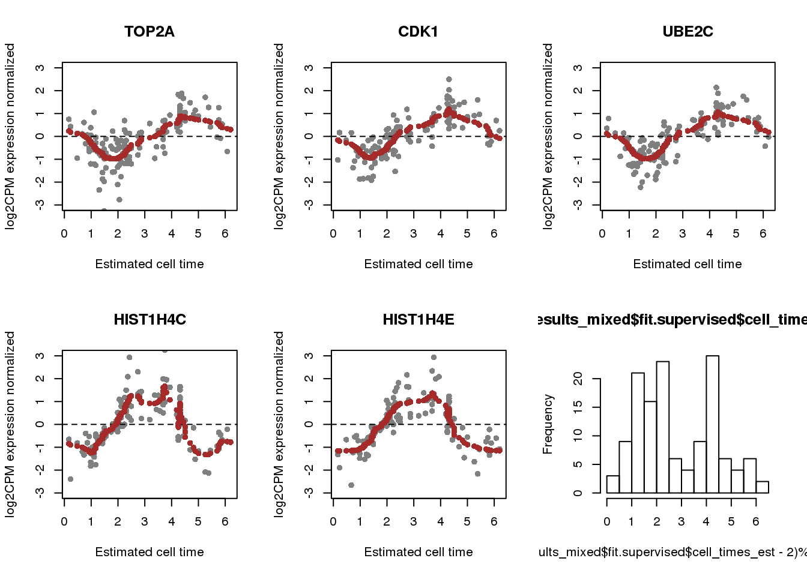

Evaluate peco in heldout samples
Joyce Hsiao
Last updated: 2018-09-25
Code version: 5e0b6fe
Import gene info
double_topgenes_mixed <- readRDS("../output/method-train-summary-output.Rmd/double_topgenes_mixed.rds")
eset <- readRDS("../data/eset-final.rds")
library(Biobase)
fdata <- fData(eset)
genes_selected <- fdata[rownames(fdata) %in% double_topgenes_mixed[[1]],]Validation sample analysis
dir <-"/project2/gilad/joycehsiao/fucci-seq"
source(file.path(dir,"code/working/run_methods.R"))
# Mixed individuals --------------------------------------------------------
data_training <- readRDS(file=file.path(dir, "data/results/data_training.rds"))
data_withheld <-readRDS(file=file.path(dir, "data/results/data_withheld.rds"))
# make prediction parameters
Y_train_topX <- data_training$log2cpm.quant.nonvalid[
rownames(data_training$log2cpm.quant.nonvalid) %in% rownames(genes_selected), ]
training_topX <- cycle.npreg.insample(Y = Y_train_topX,
theta = data_training$theta.nonvalid,
polyorder=2,
ncores=15,
method.trend="trendfilter")
seurat.genes <- readLines(
con = file.path(dir,
"data/cellcycle-genes-previous-studies/seurat_cellcycle/regev_lab_cell_cycle_genes.txt"))
seurat.genes <- list(s.genes=seurat.genes[1:43],
g2m.genes=seurat.genes[44:97])
results_eval_topX <- run_methods(Y_test=data_withheld$log2cpm.valid,
Y_test_normed=data_withheld$log2cpm.quant.valid,
theta_test=data_withheld$theta.valid,
training_model=training_topX,
seurat.genes=seurat.genes,
pdata_test=data_withheld$pdata.valid,
fdata=data_withheld$fdata,
ncores=12, maxiter=30)
saveRDS(results_eval_topX,
file=file.path(dir,
"output/method-validation.Rmd/valid_top5_mixed.rds"))
# each individual --------------------------------------------------------
inds <- c("NA19098", "NA18511", "NA18870", "NA19101", "NA18855", "NA19160")
for (i in 1:length(inds)) {
data_training <- readRDS(paste0("../data/results/ind_",
inds[i], "_data_training.rds"))
data_withheld <- readRDS(paste0("../data/results/ind_",
inds[i], "_data_withheld.rds"))
Y_train_topX <- data_training$log2cpm.quant.nonvalid[
rownames(data_training$log2cpm.quant.nonvalid) %in% rownames(genes_selected), ]
training_topX <- cycle.npreg.insample(Y = Y_train_topX,
theta = data_training$theta.nonvalid,
polyorder=2,
ncores=15,
method.trend="trendfilter")
seurat.genes <- readLines(
con = file.path(dir,
"data/cellcycle-genes-previous-studies/seurat_cellcycle/regev_lab_cell_cycle_genes.txt"))
seurat.genes <- list(s.genes=seurat.genes[1:43],
g2m.genes=seurat.genes[44:97])
results_eval_topX <- run_methods(Y_test=data_withheld$log2cpm.valid,
Y_test_normed=data_withheld$log2cpm.quant.valid,
theta_test=data_withheld$theta.valid,
training_model=training_topX,
seurat.genes=seurat.genes,
pdata_test=data_withheld$pdata.valid,
fdata=data_withheld$fdata,
ncores=12, maxiter=30)
saveRDS(results_eval_topX,
file=paste0("../output/method-validation.Rmd/valid_top5_",inds[i],".rds"))
}
# summarize output --------------------------------------------------------
results_mixed <- readRDS("../output/method-validation.Rmd/valid_top5_mixed.rds")
n <- length(results_mixed$fit.supervised$diff_time)
foo <- rbind(data.frame(methods="peco",
diff_mean=mean(results_mixed$fit.supervised$diff_time/2/pi),
diff_se=sd(results_mixed$fit.supervised$diff_time/2/pi)/sqrt(n),
ind="mixed"),
data.frame(methods="seurat",
diff_mean=mean(results_mixed$fit.seurat$diff_time/2/pi),
diff_se=sd(results_mixed$fit.seurat$diff_time/2/pi)/sqrt(n),
ind="mixed"))
for (i in 1:length(inds)) {
res <- readRDS(paste0("../output/method-validation.Rmd/valid_top5_", inds[i], ".rds"))
n <- length(res$fit.supervised$diff_time)
foo_tmp <- rbind(data.frame(methods="peco",
diff_mean=mean(res$fit.supervised$diff_time/2/pi),
diff_se=sd(res$fit.supervised$diff_time/2/pi)/sqrt(n),
ind=inds[i]),
data.frame(methods="seurat",
diff_mean=mean(res$fit.seurat$diff_time/2/pi),
diff_se=sd(res$fit.seurat$diff_time/2/pi)/sqrt(n),
ind=inds[i]))
foo <- rbind(foo,foo_tmp)
}
saveRDS(foo,
file="../output/method-validation.Rmd/valid_top5_summary.rds")Validation sample results
results_all <- readRDS("../output/method-validation.Rmd/valid_top5_summary.rds")
results_all$ind <- as.character(results_all$ind)
results_all$ind <- factor(results_all$ind,
levels=c("mixed", "NA19098", "NA18855",
"NA19101", "NA18511", "NA18870", "NA19160"),
labels=c("Mixed", LETTERS[1:6]))
library(ggplot2)
ggplot(results_all,
aes(x=ind, y=diff_mean, group=methods)) +
geom_errorbar(results_all,
mapping=aes(ymin=diff_mean-diff_se, ymax=diff_mean+diff_se,
col=methods)) +
geom_point(aes(color=methods)) +
ylab("Prediction error (% arc length)") + xlab("Validation datasets") +
ylim(0,.25) 
results_mixed <- readRDS(file="../output/method-validation.Rmd/valid_top5_mixed.rds")
plot(results_mixed$fit.supervised$ref_time,
results_mixed$fit.supervised$diff_time)
par(mfrow=c(1,2))
hist(results_mixed$fit.supervised$diff_time/2/pi, nclass=20,
xlab="Prediction error (% arc length)", main= "peco")
abline(v=.25, col="blue")
hist(results_mixed$fit.seurat$diff_time/2/pi, nclass=20,
xlab="Prediction error (% arc length)", main= "seurat")
abline(v=.25, col="blue")labs <- fdata$name[match(rownames(results_mixed$fit.supervised$Y),
rownames(fdata))]
par(mfrow=c(2,3))
for (i in 1:5) {
plot(x=(results_mixed$fit.supervised$cell_times_est-2)%%(2*pi),
results_mixed$fit.supervised$Y[i,], pch=16, col="gray50",
ylab="log2CPM expression normalized", xlab="Estimated cell time",
main = labs[i],
ylim=c(-3,3))
abline(h=0, col="black", lty=2)
points(x=(results_mixed$fit.supervised$cell_times_reordered-2)%%(2*pi),
y=results_mixed$fit.supervised$mu_reordered[i,], col = "brown", pch=16)
}
hist((results_mixed$fit.supervised$cell_times_est-2)%%(2*pi), nclass=20)
Public datasets: Leng et al. 2015
Get predictive profile from our data. Mixed of 6 humam iPSC lines. A total of 755 cells.
Use 5 genes.
data_training <- readRDS("../data/results/data_training.rds")
dir <-"/project2/gilad/joycehsiao/fucci-seq"
source(file.path(dir,"code/working/run_methods.R"))
double_topgenes_mixed <- readRDS("../output/method-train-summary-output.Rmd/double_topgenes_mixed.rds")
eset <- readRDS("../data/eset-final.rds")
fdata <- fData(eset)
genes_selected <- fdata[rownames(fdata) %in% double_topgenes_mixed[[11]],]
# Leng data
log2cpm_quant <- readRDS("../data/rnaseq-previous-studies/leng/log2cpm_quant.rds")
pdata <- readRDS("../data/rnaseq-previous-studies/leng/pdata_filtered.rds")
genes_included <- genes_selected[which(genes_selected$name %in% rownames(log2cpm_quant)),]
Y_train_topX <- data_training$log2cpm.quant.nonvalid[
rownames(data_training$log2cpm.quant.nonvalid) %in% rownames(genes_included), ]
training_topX <- cycle.npreg.insample(Y = Y_train_topX,
theta = data_training$theta.nonvalid,
polyorder=2,
ncores=10,
method.trend="trendfilter")
# Predicting -------------------------------------------------------------------
# Leng data
log2cpm_quant <- readRDS("../data/rnaseq-previous-studies/leng/log2cpm_quant.rds")
pdata <- readRDS("../data/rnaseq-previous-studies/leng/pdata_filtered.rds")
#genes_selected[which(genes_selected$name %in% rownames(log2cpm_quant)),]
test_data <- log2cpm_quant[which(rownames(log2cpm_quant) %in% genes_included$name),]
test_data <- test_data[match(genes_included$name, rownames(test_data)),]
cbind(rownames(training_topX$Y), rownames(test_data), rownames(genes_included), genes_included$name)
# head(cbind(rownames(test_data), genes_included$name))
# rownames(training_topX$Y)
# names(sigma_est)
# names(funs_est)
# rownames(test_data)
source("../peco/R/cycle.npreg.R")
source("../peco/R/run_seurat.R")
fit.supervised <- cycle.npreg.outsample(
Y_test=test_data,
sigma_est=training_topX$sigma_est,
funs_est=training_topX$funs_est,
# theta_prior=training_topX$theta,
method.grid = "uniform",
method.trend="trendfilter",
polyorder=2,
ncores=15)
seurat.genes <- readLines(
con = file.path(dir,
"data/cellcycle-genes-previous-studies/seurat_cellcycle/regev_lab_cell_cycle_genes.txt"))
seurat.genes <- list(s.genes=seurat.genes[1:43],
g2m.genes=seurat.genes[44:97])
fit.seurat <- run_seurat(Y=log2cpm_quant,
s.genes=seurat.genes$s.genes,
g2m.genes=seurat.genes$g2m.genes,
n.bin=25,
seed.use=1, random.seed=1)
out <- list(training_model=training_topX,
genes_selected=genes_selected,
fit.supervised=fit.supervised,
fit.seurat=fit.seurat)
saveRDS(out, "../output/method-validation.Rmd/leng_res.rds")
#table(pdata$cell_state, fit.seurat$assignments)
shift <- (fit.supervised$cell_times_est - pi/2)%%(2*pi)
plot(shift,
fit.supervised$Y[1,], col=pdata$cell_state)
plot(fit.supervised$cell_times_est,
fit.supervised$Y[2,], col=pdata$cell_state)
hist(fit.supervised$cell_times_est, nclass=20)Session information
sessionInfo()R version 3.4.3 (2017-11-30)
Platform: x86_64-pc-linux-gnu (64-bit)
Running under: Scientific Linux 7.4 (Nitrogen)
Matrix products: default
BLAS/LAPACK: /software/openblas-0.2.19-el7-x86_64/lib/libopenblas_haswellp-r0.2.19.so
locale:
[1] LC_CTYPE=en_US.UTF-8 LC_NUMERIC=C
[3] LC_TIME=en_US.UTF-8 LC_COLLATE=en_US.UTF-8
[5] LC_MONETARY=en_US.UTF-8 LC_MESSAGES=en_US.UTF-8
[7] LC_PAPER=en_US.UTF-8 LC_NAME=C
[9] LC_ADDRESS=C LC_TELEPHONE=C
[11] LC_MEASUREMENT=en_US.UTF-8 LC_IDENTIFICATION=C
attached base packages:
[1] parallel stats graphics grDevices utils datasets methods
[8] base
other attached packages:
[1] ggplot2_3.0.0 Biobase_2.38.0 BiocGenerics_0.24.0
loaded via a namespace (and not attached):
[1] Rcpp_0.12.18 bindr_0.1 knitr_1.20 magrittr_1.5
[5] munsell_0.5.0 colorspace_1.3-2 R6_2.2.2 rlang_0.2.1
[9] dplyr_0.7.4 stringr_1.3.1 plyr_1.8.4 tools_3.4.3
[13] grid_3.4.3 gtable_0.2.0 withr_2.1.2 git2r_0.21.0
[17] htmltools_0.3.6 assertthat_0.2.0 yaml_2.2.0 lazyeval_0.2.1
[21] rprojroot_1.3-2 digest_0.6.15 tibble_1.4.2 bindrcpp_0.2
[25] glue_1.3.0 evaluate_0.10.1 rmarkdown_1.10 labeling_0.3
[29] stringi_1.2.4 compiler_3.4.3 pillar_1.1.0 scales_1.0.0
[33] backports_1.1.2 pkgconfig_2.0.1 This R Markdown site was created with workflowr